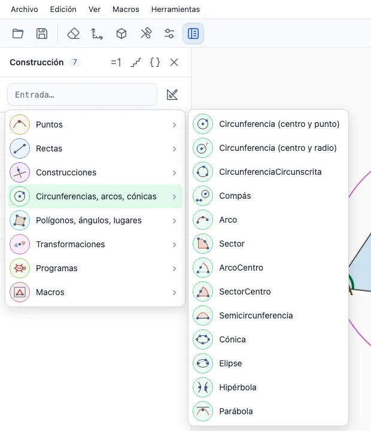
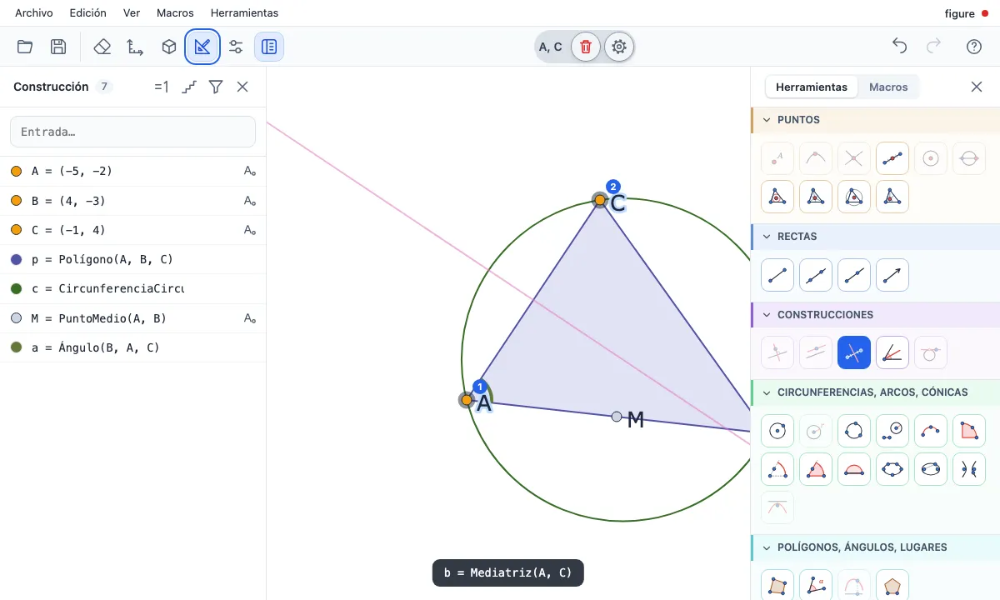

El menú de herramientas

Uso
- , a la derecha de la línea de entrada, abre el menú: las familias del anillo, mismos colores, mismo orden, y luego sus herramientas al pasar el puntero o al tocar.
- El menú contiene todas las herramientas del anillo y otras más (distintivo anillo abajo). Las familias Planos y Sólidos y las herramientas marcadas 3D solo aparecen en la vista 3D.
- La familia Programas, propia del menú, crea tortugas y botones (ver Bloques y tortuga).
- El primer objeto seleccionado ocupa cualquier lugar que su tipo admita: para una perpendicular, la recta puede ir antes que el punto.
- Los argumentos también se seleccionan en el panel «Construcción»: las líneas de los objetos que la herramienta admite aparecen resaltadas en verde y las demás atenuadas. También se puede seleccionar allí un objeto oculto. Un punto solo se selecciona allí si ya existe, y la intersección de dos curvas es la primera. Mientras la herramienta está activa, un clic en una línea no la modifica. Una línea ya seleccionada se vuelve azul, con su lugar en el comando (1, 2…).
- La herramienta es persistente: tras cada objeto, espera de nuevo su primer argumento. El botón del menú toma su icono y la barra muestra una franja con Listo.
- Un argumento seleccionado con Mayús se conserva: la herramienta lo vuelve a tomar después de cada objeto, hasta que se sale de ella. Mayús-clic en el eje de una simetría y luego un clic en cada objeto que se transforma; lo mismo con el centro de circunferencias concéntricas. El botón Conservar d de la consigna hace lo mismo (con el dedo, por ejemplo); Cambiar d lo vuelve a pedir. Ni para la herramienta del anillo ni para los objetos seleccionados antes de la herramienta.
- Salir: Listo, Esc, la ✕ de la indicación, el botón del menú (que vuelve a abrir el menú), la goma, el paso a paso o un clic en la línea de entrada. Deshacer, rehacer, las propiedades y la vista 3D conservan la herramienta.
Con una selección
Los objetos seleccionados antes se convierten en los argumentos de la herramienta elegida: ver Construir por selección múltiple.
Transformar un objeto
- Una transformación toma primero lo que la define (centro, eje, vector, circunferencia) y luego el punto o el objeto que se transforma: segmento, recta, semirrecta, vector, polígono, circunferencia, arco, cónica, gráfica de función, lugar geométrico; en 3D también un plano, una esfera, un poliedro (salvo por una inversión).
- Bajo el puntero, un punto tiene prioridad, luego el objeto; en el vacío, se crea un punto. Al pasar por encima, la imagen aparece en pálido.
- La imagen es de la misma naturaleza que el objeto: un polígono para un polígono, una circunferencia para una circunferencia… Una gráfica de función, un lugar geométrico o un arco de cónica tienen por imagen un lugar geométrico.
- Por una inversión, una recta o una circunferencia tiene por imagen una circunferencia, o una recta si pasa por el centro; un polígono, un polígono de lados curvos.
- La imagen toma el color, el relleno, el tamaño, la opacidad y el trazo discontinuo de su objeto. No se arrastra, pero se puede colocar un punto sobre ella.
- Para transformar varios objetos, seleccionar el centro o el eje con Mayús (argumento conservado).
La paleta de herramientas

- de la barra, o Ver › Paleta de herramientas, abre a la derecha todas las herramientas geométricas del menú, a la vista, por familias con los mismos colores (sin Programas), y luego las macros de la figura.
- Ocupa el lugar del panel de propiedades: abrir uno cierra el otro, sin soltar la herramienta en uso.
- Un clic en el título de una familia la pliega o la despliega; DocGeo lo recuerda.
- Un clic en una herramienta la toma, como en el menú; una vez pulsada, un nuevo clic la suelta.
- Con la paleta abierta, un clic en un objeto lo selecciona sin abrir el anillo, y un clic en un lugar vacío lo deselecciona. Las herramientas que no aceptan el objeto, o la selección múltiple, aparecen atenuadas.
- Al pasar sobre una herramienta, la indicación muestra su línea. Si los objetos seleccionados le bastan, el objeto que construiría aparece en tono pálido.
- Esc suelta la herramienta o la selección, y luego cierra la paleta.
- En una pantalla pequeña, la paleta cubre la figura y se cierra en cuanto se elige una herramienta. Por debajo de 500 px de ancho, su botón desaparece: queda el menú.
Todas las herramientas
Para cada herramienta: lo que se selecciona y la línea escrita.
Puntos
-
PuntoanilloEl punto que se toca: libre en un lugar vacío, sobre un objeto o en la intersección de dos objetos.
Punto(c, t) -
IntersecciónanilloUn cruce con un solo toque, o los dos objetos uno tras otro.
Intersección(a, b) -
PuntoMedioanilloDos puntos, o un segmento.
PuntoMedio(A, B) -
CentroanilloUna circunferencia: su centro.
Centro(c) -
OtraIntersecciónDos objetos y luego un punto ya situado en una de sus intersecciones: el punto de intersección más alejado de él.
OtraIntersección(a, b, P) -
IncentroTres puntos, vértices de un triángulo: el centro de su circunferencia inscrita.
Incentro(A, B, C) -
BaricentroTres puntos: el baricentro del triángulo.
Baricentro(A, B, C) -
CircuncentroTres puntos: el centro de la circunferencia circunscrita.
Circuncentro(A, B, C) -
OrtocentroTres puntos: el ortocentro del triángulo.
Ortocentro(A, B, C)
Rectas
-
SegmentoanilloDos puntos, sus extremos.
Segmento(A, B) -
RectaanilloDos puntos de la recta.
Recta(A, B) -
SemirrectaanilloDos puntos: el origen y luego un punto de la semirrecta.
Semirrecta(A, B) -
VectoranilloDos puntos: el origen y luego el extremo.
Vector(A, B)
Construcciones
-
PerpendicularanilloUn punto y una recta, en el orden que se quiera. En 3D, una recta o un plano.
Perpendicular(P, d) -
ParalelaanilloUn punto y una recta, en el orden que se quiera.
Paralela(P, d) -
MediatrizanilloDos puntos, o un segmento.
Mediatriz(A, B) -
BisectrizanilloTres puntos: un punto del primer lado, el vértice, un punto del segundo lado.
Bisectriz(A, O, B) -
TangenteUn punto y luego una circunferencia, una cónica o la gráfica de una función. La herramienta da la tangente n.º 1; cambia ese número a 2 en su línea para la otra.
Tangente(P, c, 1)
Circunferencias, arcos, cónicas
-
Circunferencia (centro y punto)anilloEl centro y luego un punto de la circunferencia.
Circunferencia(O, A) -
Circunferencia (centro y radio)anilloSolo el centro: en el anillo, mantener pulsado el icono, mover el ratón o el dedo y soltar para fijar el radio. Desde el menú o la paleta, el radio inicial es de unos 150 píxeles. Después se cambia arrastrando la circunferencia o en su línea.
-
CircunferenciaCircunscritaanilloTres puntos de la circunferencia.
CircunferenciaCircunscrita(A, B, C) -
CompásDos puntos que dan el radio y luego el centro.
Compás(A, B, O) -
Circunferencia (centro, dirección y radio)3DEl centro y luego una recta (el eje) o un plano (paralelo a la circunferencia), incluido el suelo. Radio de unos 150 píxeles.
Circunferencia(O, 3.8, d) -
Circunferencia (eje y punto)3DUna recta, el eje, y luego un punto de la circunferencia.
Circunferencia(d, P) -
ArcoTres puntos: el inicio, un punto de paso, el final (en 3D, en su plano). O una circunferencia o una elipse y luego el inicio y el final (sentido antihorario).
Arco(A, B, C),Arco(c, P, Q) -
SectorComo el arco, tres puntos, o una circunferencia o una elipse y dos puntos: el sector que delimita.
Sector(A, B, C),Sector(c, P, Q) -
ArcoCentroEl centro, el inicio y luego un punto de la semirrecta donde termina el arco (sentido antihorario). En 3D, el arco del ángulo AMB, en su plano.
ArcoCentro(M, A, B) -
SectorCentroComo
ArcoCentro: el sector.SectorCentro(M, A, B) -
SemicircunferenciaDos puntos, extremos del diámetro: la semicircunferencia a la izquierda de [AB].
Semicircunferencia(A, B) -
CónicaCinco puntos de la cónica. Desde el segundo, la vista previa muestra la cónica más parecida a una circunferencia.
Cónica(A, B, C, D, E) -
ElipseLos dos focos y luego un punto de la elipse.
Elipse(F, G, P) -
HipérbolaLos dos focos y luego un punto de la hipérbola.
Hipérbola(F, G, P) -
ParábolaEl foco y luego la directriz.
Parábola(F, d)
Polígonos, ángulos, lugares
-
PolígonoanilloLos vértices uno a uno y luego de nuevo el primero para cerrar.
Polígono(A, B, C) -
ÁnguloanilloTres puntos: un punto del primer lado, el vértice, un punto del segundo lado.
Ángulo(A, O, B) -
LugarGeométricoanilloUn punto que depende de un punto sobre objeto: su lugar cuando ese punto recorre su objeto.
LugarGeométrico(M, P) -
PolígonoRegularDos vértices consecutivos: la herramienta da un cuadrado; cambia el número de lados en su línea.
PolígonoRegular(A, B, 4)
Transformaciones
-
Simetría centralanilloEl centro y luego el punto o el objeto que se transforma.
Simetría(O, P) -
Simetría axialanilloEl eje y luego el punto o el objeto que se transforma.
Simetría(d, P) -
RotaciónEl centro y luego el punto o el objeto: un cuarto de vuelta, que se cambia en su línea.
Rotación(O, P, 90) -
TraslaciónEl vector y luego el punto o el objeto.
Traslación(u, P) -
HomoteciaEl centro y luego el punto o el objeto: una razón de 2, que se cambia en su línea.
Homotecia(O, P, 2) -
InversiónLa circunferencia de inversión y luego el punto o el objeto.
Inversión(c, P)
Planos
-
Plano3DTres puntos, o un punto y una recta.
Plano(A, B, C) -
PlanoParalelo3DUn punto y un plano (incluido el suelo): el plano paralelo que pasa por el punto.
PlanoParalelo(A, p) -
PlanoOrtogonal3DUn punto y una recta: el plano ortogonal a la recta.
PlanoOrtogonal(A, d)
Sólidos
-
Esferaanillo3DEl centro y luego un punto de la esfera.En el anillo de herramientas de un punto, está junto a las circunferencias.
Esfera(O, A) -
Cilindro3DDos puntos, extremos del eje. Radio de unos 150 píxeles.
Cilindro(A, B, 3.8) -
Cono3DEl centro de la base y luego el vértice. Radio de unos 150 píxeles.
Cono(A, B, 3.8) -
Cubo3DDos puntos de un mismo plano o de la misma altura; si no, tres puntos (ver el 3D).
Cubo(A, B, C) -
Prisma3DUn polígono, la base, y luego un punto, vértice de la cara opuesta.
Prisma(p, P) -
Pirámide3DUn polígono, la base, y luego el vértice.
Pirámide(p, S) -
Sección3DUn sólido (esfera, cilindro, cono, poliedro) y un plano, en el orden que se quiera.
Sección(s, p) -
Desarrollo3DUn cubo, un prisma o una pirámide: su desarrollo plano.
Desarrollo(c, 1)
Programas
-
TortugaUn punto, o un lugar vacío que crea uno: la tortuga que parte de ese punto, abierta en bloques.
TURTLE_INIT("A", A) -
BotónEl lugar de su flecha: el botón, con su programa abierto en bloques.
Botón("Ejecutar") -
Al arrastrar el objetoUn punto que se puede arrastrar: el programa que se ejecuta al arrastrarlo, abierto en bloques.
-
Al presionar el objetoUn punto que se puede arrastrar: el programa que se ejecuta al presionarlo, abierto en bloques.
-
Al soltar el objetoUn punto que se puede arrastrar: el programa que se ejecuta al soltarlo, abierto en bloques.
-
Cuando cambia el valorUna expresión: el programa que se ejecuta cuando cambia su valor, abierto en bloques.
Macros
-
Nueva macroLos objetos seleccionados como primeros iniciales: la definición de una macro; siguen las macros de la figura (ver Las macros).
Las transformaciones construyen la imagen de un punto o de un
objeto (ver
Transformar un objeto). Solo
con el teclado: PuntoFijo, Vértice,
Deslizador, Lista, las intersecciones
en el espacio, Elipse(F, G, a) e
Hipérbola(F, G, a) (ver
Los comandos).